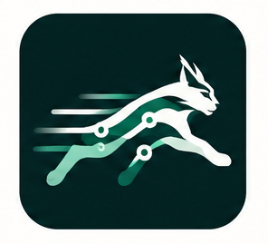
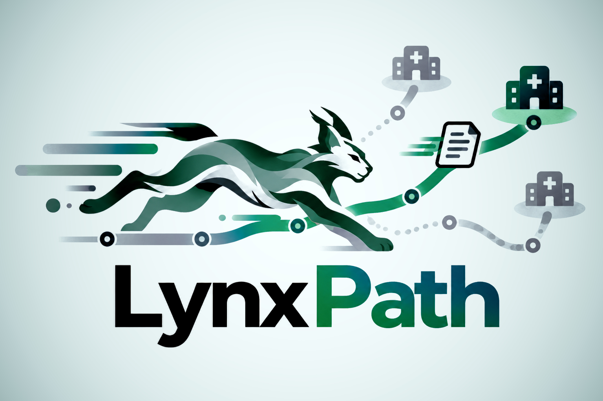

Travel
Time to reach the facility

LynxPathOPEN SOURCE · RESEARCH DEMO · V0.1
The closest suitable hospital is not always the fastest route to the care a patient needs. LynxPath compares travel time, ED delay and required-resource delays to make that operational difference visible.

01 / THE IDEA
A clinician or pathway defines the required resources. LynxPath filters ineligible facilities, estimates time-to-care for the rest, and explains why the ranking changes.
Time to reach the facility
Emergency department load
Queues for required capabilities
A range, with an explanation
02 / EXPLORE THE NETWORK
| Facility | Eligibility | Travel | ED | Resources | Total / range | Signal |
|---|
03 / BUILT TO BE INSPECTED
A vendor-neutral capacity schema gives adapters a shared language. FHIR, regional and local feed adapters are future contribution areas.
Estimates include confidence and signal age. Older or less reliable signals widen the estimated range.
LynxPath does not diagnose, infer treatment or autonomously choose a destination. Requirements come from the clinician or pathway.
The FOSDEM v0.1 demo pitch slides.